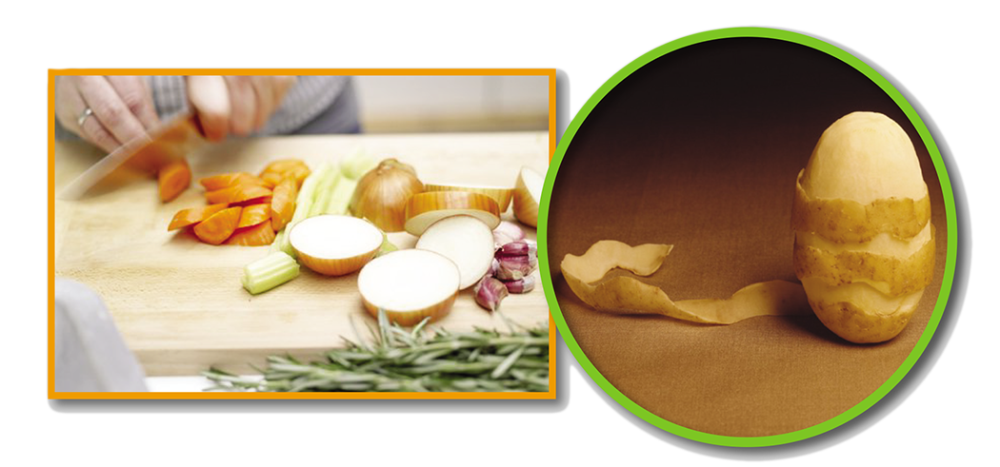

சமைக்கும் முன் மாத்திரமே வெட்டுங்கள், இல்லாவிடின் காற்றுடன் தொடர்புபட்டு விற்றமின்கள் இழக்கப்படலாம்.
நீரில் கரையும் சத்துக்கள் வடிந்துவிடும் என்பதனால் காய்கறிகளை வெட்டுமுன் கழுவவும்.
காய்கறிகளை தோலுடன் சமைக்கப்பட வேண்டும், அல்லது மெல்லிய தோல் பாகம் சீவி எடுக்கப்பட வேண்டும். ஏனெனில், பல காய்கறிகளில் தோலுக்கடியில் சத்துக்கள் உண்டு.
